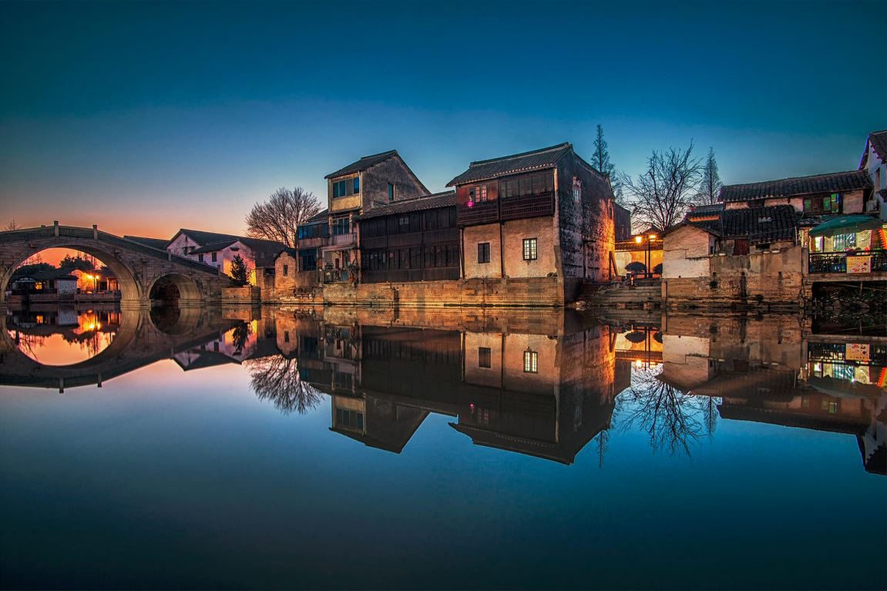

锦溪古镇 (距离3公里)
国家AAAA级景区，拥有陈妃水冢、文昌古阁、十眼长桥等多处景点和“镇为泽国，四面环水”的水乡原貌。锦溪同时也是中国民间博物馆之乡，古砖瓦博物馆、紫砂馆等也吸引了无数游客。
周庄古镇 (距离10公里)
国家AAAAA级景区， 有“中国第一水乡”的美誉。典型的江南水乡风貌、独特的人文景观，是中国水乡文化和吴地汉文化的瑰宝。

千灯古镇 (距离8公里)
国家AAAA级景区，是著名爱国学者顾炎武的故乡，也是昆曲的发源地。镇上保留着堪称"中国第一当"的余氏典当行，明清石板街绵延长达2公里，是江苏省内保存最长、最完整的石板街。
同里古镇 (距离20公里)
国家AAAAA级景区，风景优美，四面环水，镇内由15条河流纵横分割为7个小岛，由49座桥连接，明清民居，鳞次栉比。镇内著名景点“退思园”被联合国教科文组织列入世界文化遗产。
高尔夫球场 (距离8公里)
周边有旭宝、光明等高尔夫俱乐部。其中距离旭宝约16公里，距离光明约12公里。
淀山湖 （距离5公里）
邻接上海青浦区，是上海最大的天然淡水湖泊，面积62平方公里，水质清澈(国家二级水质)，开展有各类包括赛艇、皮划艇、帆船、帆板、龙舟等水上运动。环湖散落着享誉盛名的朱家角古镇、上海大观园、东方绿舟、上海太阳岛、陈云纪念馆等5个国家AAAA级景区。
甪直古镇 （距离10公里）
国家AAAAA级景区，被费孝通赞为"神州水乡第一镇"，被茅以升称为 "中国古代桥梁博物馆"。甪直历史文物众多，人文景观棋布。千年古刹保圣寺是全国首批重点文物保护单位， 还有叶圣陶纪念馆、万盛米行、沈宅、水乡农具博物馆、萧芳芳演艺馆、王韬纪念馆馆等一大批历史人文景观。
大观园 （距离8公里）
国家级AAAAA景区，为根据中国清代名著《红楼梦》的描写设计而成的大型仿古园林.